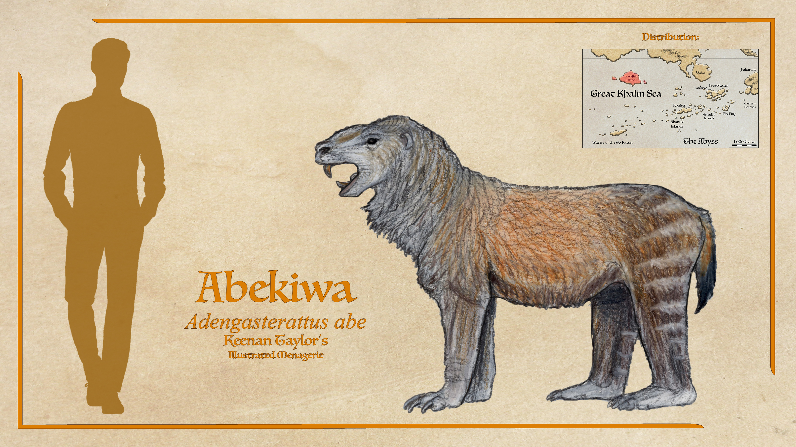

Scientific Classification
| Kingdom | Animalia | Animal | Animals |
|---|---|---|---|
| Phylum | Chordata | Chorda | Corded |
| Class | Mammalia | Mammālis | Of the Breast |
| Subclass | Allotheria | ἄλλος + θηρῐ́ον | Other Beasts |
| Order | Multituberculata | Multus + Tūberculātus | Many Tubercle's |
Taxonomic note: Multituberculates are traditionally recognized by their distinctive multituberculate dentition, particularly the numerous tubercles present on their molars. In many derived forms, however, the most conspicuous component of the tooth row is a large, blade-like premolar capable of slicing through tough vegetation or, in predatory species, cutting flesh. Their incisors are typically evergrowing and blade-like.
01 · INTRODUCTION
Overview

The multituberculates are one of the most successful mammalian radiations on Kaimere and one of the most ecologically diverse groups of non-therian mammals known from the planet. Their name derives from the numerous tubercles present on their molar teeth, although this feature is most conspicuous in the more generalized members of the group. In several derived lineages, an enlarged, blade-like premolar has become the dominant component of the feeding apparatus. Continuously growing incisors are another characteristic feature of the group.
On Earth, multituberculates were an extraordinarily successful Mesozoic mammalian radiation. They first appeared during the Jurassic and persisted until the early Cenozoic, surviving the end-Cretaceous extinction before eventually disappearing. On Kaimere, however, their history unfolded very differently. Introduced during the second Jurassic harvest, multituberculates initially remained relatively minor components of mammalian communities. They were generally small-bodied generalists living alongside much larger and more ecologically dominant non-mammalian therapsids and, later, increasingly diverse mammals.
Their fortunes changed dramatically during the transition between the Second Cretaceous Dynasty, or Age of Red Spring, and the Tyrant Dynasty approximately 68 million years ago. Increasing aridity eliminated many eutriconodont lineages that had previously dominated the mammalian fauna of the Northern Hemisphere. Multituberculates exploited the vacant niches and underwent a major adaptive radiation. Although they remained generally small, they expanded into herbivorous, predatory, aquatic, and gliding lifestyles.
The most dramatic change occurred after the Dynastic Extinction. The extinction eliminated most animals weighing more than approximately 100 pounds, suddenly removing many of the large competitors that had constrained multituberculate evolution. Multituberculates became one of the great beneficiaries of the extinction. On Kairul, in particular, they underwent an extraordinary radiation and expanded into numerous ecological niches previously occupied by large placentals, carnivorans, ungulates, rodents, and other mammals.
Their success has produced an unusual evolutionary landscape in which multituberculates can resemble almost any familiar mammalian group. Some are mouse-like seed eaters, others resemble squirrels or marmots, while still others have become large grazers, aquatic herbivores, gliding predators, or highly specialized carnivores. The komatu is a social cursorial predator convergent upon carnivorans and hyenas, while the bilaruk, or Kaimerean leviathan, has evolved into the largest known multituberculate and one of the planet's largest aquatic herbivores. The multituberculate radiation is therefore best understood not as a single rodent-like lineage but as a broad mammalian radiation capable of occupying an extraordinary range of ecological roles.
02 · DEEP TIME
Evolutionary History
Origins and Mesozoic Expansion
Multituberculates originated during the Mesozoic and became one of the major mammalian radiations of the Cretaceous. Their defining dental adaptations allowed them to process tough plant material efficiently, particularly seeds and other resistant foods. Many species were primarily herbivorous, although insects and other small invertebrates were probably important components of the diets of numerous early members. Some species may also have scavenged.
Their evolutionary relationship to other mammals remains complicated. Traditional classifications have sometimes placed multituberculates outside the therian mammals, while other interpretations place them closer to marsupials and placentals. Their reproductive biology has likewise been debated. Their pelvic anatomy was historically interpreted as evidence for egg laying or pouch-bearing reproduction, and many multituberculates possessed venomous spurs reminiscent of monotremes.
More recent interpretations of their anatomy and development suggest a considerably more sophisticated reproductive biology. Their braincases indicate relatively complex brains, while evidence from bone development suggests that at least some multituberculates possessed prolonged gestation followed by a relatively short period of nursing. This would make their reproductive biology considerably more similar to placentals than to monotremes or marsupials.
The Kaimeran multituberculates ultimately derive from animals introduced during the second Jurassic harvest approximately 145 million years ago. At this time, mammals were not yet the dominant large terrestrial animals in the Known World. Basal cynodonts and therocephalians still occupied many ecological roles that mammals would later dominate, while eutriconodonts represented the most successful mammalian radiation.
Consequently, early Kaimeran multituberculates remained comparatively conservative. Most occupied small generalist niches and avoided direct competition with the larger predators and herbivores dominating the terrestrial ecosystem.
The Tyrant Dynasty Radiation
The ecological situation changed dramatically approximately 68 million years ago with the transition into the Tyrant Dynasty. Increasing aridity devastated numerous eutriconodont lineages. Their decline created an enormous number of vacant ecological niches across the Northern Hemisphere. Multituberculates were among the lineages capable of exploiting these openings.
Their subsequent radiation was remarkable because it occurred without immediately producing enormous animals. During the Tyrant Dynasty, approximately 100 pounds represented the conventional upper size limit for multituberculates, and most species remained substantially smaller. Within that size constraint, however, they became extraordinarily diverse.
Some remained generalized herbivores and omnivores, while others became specialized seed eaters. Others evolved into predators, gliders, and aquatic forms. Multituberculates therefore began developing ecological roles that had previously been unavailable to them, establishing the evolutionary foundation for their later Cenozoic radiation. Their success also demonstrated that the group was not inherently limited to the small-bodied niches with which it had traditionally been associated. The principal limitation had been ecological opportunity rather than anatomical inferiority.
The Dynastic Extinction
The greatest turning point in multituberculate evolution occurred approximately 15 million years ago, during the Dynastic Extinction. The extinction devastated the large-animal communities of Kaimere. Most animals exceeding approximately 100 pounds disappeared, eliminating many of the large competitors that had previously prevented multituberculates from expanding into larger niches.
The arrival of large placental mammals during the Oligocene introduced a new source of competition. These placentals were often interpreted by early Assembly scholars as ecologically superior to multituberculates because they rapidly established large-bodied forms. In reality, their initial advantage was largely one of body size. The placental mammals arrived already equipped to compete with the large dinosaurs and other megafauna of the period, whereas multituberculates had spent most of their previous evolutionary history occupying smaller niches.
The opportunity for multituberculates came with the Dynastic Extinction. The extinction eliminated most animals weighing more than approximately 100 pounds, effectively dismantling much of the existing megafaunal hierarchy. Multituberculates were among the groups best positioned to exploit the resulting ecological vacuum. The aftermath produced one of the greatest multituberculate radiations in Kaimeran history.
03 · SPECIES ACCOUNTS
Known Diversity
The following accounts document representative felids recorded in the encyclopedia. Select a species to consult its individual natural history and descriptive account.
Haraod
Scientific placement to be confirmed
A reclusive highland predator associated with the Arvelith Highlands.
Read species article →Abekiwa

Adengasterattus abe
According to Wind-Kisser, a creature he called Fullbelly Rat and by the Blackfish as abekiwa or just the abe was the most abundant beast of the island. Felicity described it as a rodent, but the Assembly believe it is likely a plektomurian multituberculate, possibly a plectursid as once were found in Pakardia and Qadan. They were described as being large hog-sized prairie dogs that lived in large herds. Males have large retractable venomous spurs on their heels that they use to fight each other, though primarily employ hand claws and their powerful bite. She said their meat was pleasant, tender and flavorful, and they were very popular targets for inland hunters. Later studies and surveys have noted many with lighter fur on the eastern islands and a few black-furred abes on the mainland, along with some that at a distance appeared significantly larger and others smaller, suggesting there may be numerous color morphs or even numerous species. This is an approximation of what Felicity most frequently described and were best photographed from a distance.
Read species article →04 · CLASSIFICATION
Taxonomic Notes
The precise phylogenetic position of Multituberculata has historically been controversial. On Earth, they have traditionally been treated as an extinct group of mammals distinct from the three major surviving mammalian lineages, although their exact position relative to monotremes and therians remains disputed.
Several hypotheses have placed multituberculates outside Theria, either as an early-diverging mammalian lineage or as a group branching near the base of Mammalia. Other interpretations have placed them closer to, or even within, the broader lineage leading to marsupials and placentals. The uncertainty is partly due to the unusual combination of primitive and highly specialized characteristics present in their anatomy.
Older interpretations portrayed multituberculates as relatively primitive mammals. Their resemblance to rodents in many ecological roles reinforced this perception, as did the presence of venomous spurs in several lineages and the unusual configuration of their pelvis. Some researchers consequently proposed that they may have laid eggs or possessed a reproductive system resembling that of marsupials.
More recent interpretations have challenged this view. Multituberculate braincases indicate considerable neurological complexity, while studies of bone development suggest that at least some members experienced prolonged gestation followed by a relatively short period of nursing. This reproductive strategy is more comparable to that of placental mammals than to either monotremes or marsupials.
The Kaimeran fossil record provides further evidence that multituberculates were not a primitive evolutionary dead end. Their descendants repeatedly evolved complex social behavior, large body size, predatory specialization, aquatic lifestyles, gliding, and sophisticated ecological interactions. Some Kaimeran multituberculates possess brains comparable in complexity to those of many modern mammals, with highly social species demonstrating advanced coordination and behavioral flexibility.
The Kaimeran radiation is divided into several major evolutionary lineages. Among the most important are the passertheres, thylacosciurians, plectromurids, titanosciurians, and thylacolepiform-related multituberculates, alongside several aquatic and highly specialized branches. Their relationships are not always completely resolved, but the available evidence indicates that Kaimerean multituberculates underwent several major independent radiations following their introduction.
One important distinction is the evolution of pouches. Several Kaimeran multituberculate groups possess pouches, but these are generally regarded as convergent adaptations rather than evidence that the ancestral multituberculate possessed a marsupial-like reproductive system. The pouches of many Kaimerean species function primarily as transportation structures for relatively developed young rather than as the essential developmental environment seen in marsupials. This has allowed pouches to evolve repeatedly in unrelated multituberculate lineages occupying environments where mobile parents benefit from carrying their offspring.